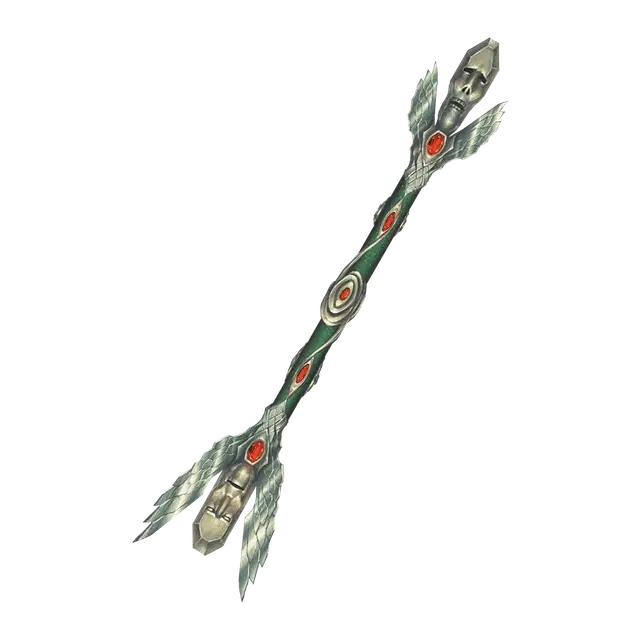

Жезл воскрешения
Rod of Resurrection
Жезл, легендарный (требуется настройка)

Рекомендованная стоимость 200 000 ЗМ
Этот жезл имеет 5 зарядов. Пока вы держите его, вы можете сотворять с его помощью следующие заклинания: Исцеление (тратит 1 заряд) или Воскрешение (тратит 5 зарядов).
Жезл восстанавливает 1 потраченный заряд на каждом рассвете. Когда вы тратите последний заряд, бросьте 1к20: если выпадает «1», жезл исчезает в безвредной вспышке.